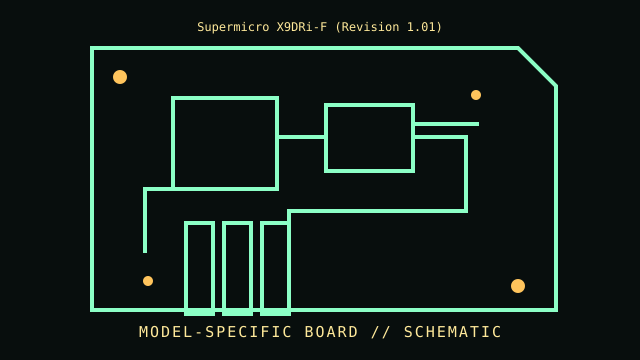

[ INDIVIDUAL COMPONENT // MOTHERBOARDS ]
Supermicro X9DRi-F (Revision 1.01)
Dual LGA2011 / Intel C602, 2012. This entry documents one exact board model/revision; its specifications are not interchangeable with similarly named variants.

REVISION WARNING: Confirm the PCB silk-screen, assembly/AA code and firmware ID on the actual board. Where documentation does not identify one PCB spin, this record states the exact documented model and explains the revision distinction below.
Specifications
| Exact model / revision | X9DRi-F PCB revision 1.01 |
|---|---|
| CPU / socket | Dual Intel Xeon E5-2600 family processors; v2 CPU support depends on BIOS and board qualification |
| Chipset / platform | Intel C602 chipset |
| Memory | Sixteen DDR3 DIMM slots, eight per CPU; ECC RDIMM/LRDIMM population and capacity are CPU/BIOS/manual-specific |
| Form factor | E-ATX (approximately 305 × 330 mm; verify chassis support) |
| I/O and expansion | PCIe 3.0 expansion, SATA/SAS configuration variant-specific, dual Gigabit LAN, VGA and dedicated IPMI management |
| Firmware compatibility | AMI BIOS plus BMC/IPMI; Xeon E5-2600 v2 operation needs the matching board firmware |
Compatibility and revision pitfalls
X9DRi-F, X9DRi-LN4F and X9DR3-F are distinct board variants. Revision 1.01 and onboard storage controller matter; use matching CPU list and manual. Install matched DIMMs in the documented order per CPU and verify v2 minimum BIOS before swapping processors.
Socket fit alone is not proof of support. Confirm the manufacturer CPU support list, the board's minimum BIOS, memory population table, and exact chassis/power requirements before operation.
Preservation notes
Save BIOS/BMC versions, board MAC/IPMI label, sensor inventory and DIMM map. Keep the original heat sinks/air ducting, document storage controller mode, and inspect socket contacts and battery before use.
Record provenance, date/serial codes, board and firmware revision, known repairs and test conditions. Photograph labels and connectors before cleaning or component removal; retain original firmware and configuration data when possible.
Sources & further reading
- Supermicro X9DRi-F — archived original board manualArchived manual specifically for the X9DRi-F model; distinguish related LN4F/DR3-F variants.
- Supermicro server-board manuals archiveArchived Supermicro manuals and platform references; confirm X9DRi-F revision before applying firmware.
Manufacturer manuals, CPU lists and archived primary documents take precedence over reseller summaries. If an archived support page omits a revision-specific file, do not assume another revision's firmware is compatible.